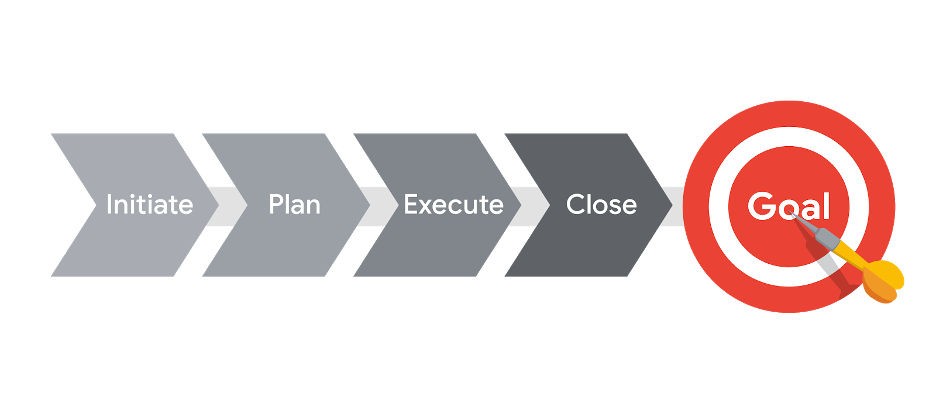
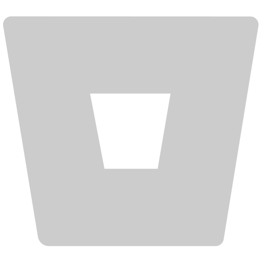
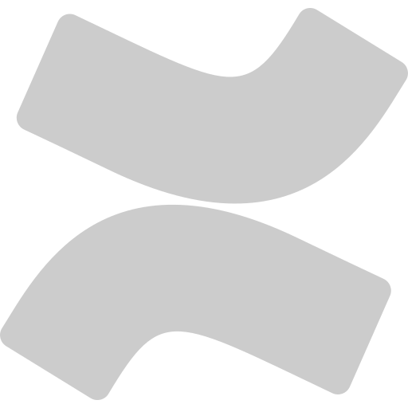
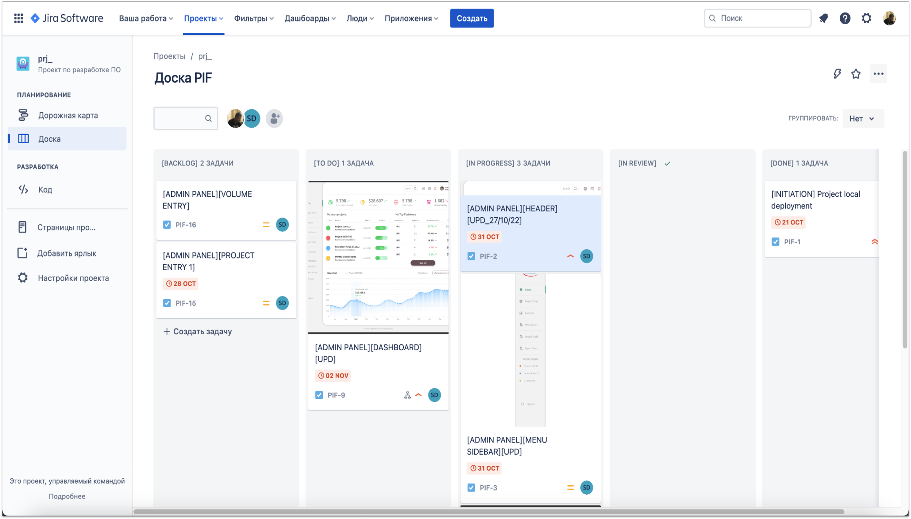
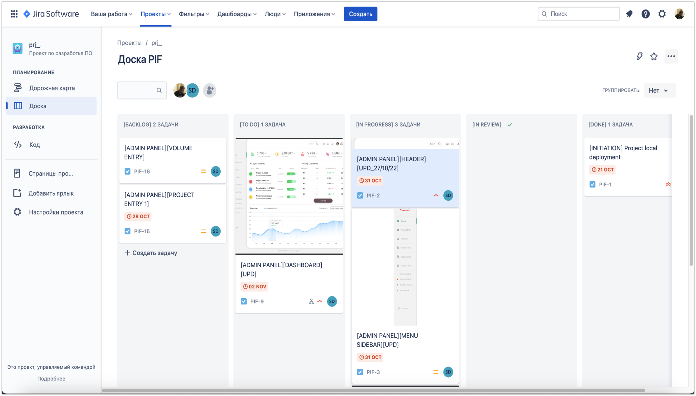

How we manage projects
Main focus
to introduce partners about:
- How our work is organized within the team
- How communication is built between team and stakeholders
- Projects life cycles
- Project management methodologies and approaches which we use
- Project documentation maintaining
Working organization with a team
- we are matrix organizational company
- we create custom software solutions for our Clients
- we have regular team calls and meetings when we discuss our performed work
- we work with professionals
- team-work is important for us
- we communicate on each issue which require more discussion
- work-life balance of our team is important for us
- we perform our work in agreed time scopes
- we use professional tools for our work
How we build communication: within team, with stakeholders
For communication within team about working process and project flow, we use such tools: Slack- for
communication during work process and project development
Slack- for
communication during work process and project development Telegram- for operative communication between team members
Telegram- for operative communication between team members - Jira- for the communication about project requirements, progress and issues
- Email- for documents flow, technical requirements, change requests, approves and invoices for communication during work process and project development
- Telegram- for operative communication between project manager, product
owner with stakeholders
- Slack- for
communication between inner- / external teams incl. stakeholders and management
How we build communication: examples on screenshots
How we split project on stages
All our projects we split on 4 general stages named project life cycles:
Such way gives a high efficiency in managing tasks and team, achieving expectations. Let’s overview:
- Initiate - a phase when we discuss, clarify, and approve project goals with stakeholders;
- Planning - a phase when we create a detailed project plan with milestones and timelines;
- Execute - a phase when the team complete project tasks under regular progress monitoring;
- Closing or delivery - a phase when delivering completed all of the requested outcomes and project docs.
What methodologies and approaches we use for successful project management?
For different types and scales of the
projects we can use:
Kanban - for fixed price projects, websites and e-commerce,
improvements, support;
Scrum/Agile - for high volumed and loaded projects, parallel
development with inner/external team.
Tools which we use for managing projects
Based on our own experiences, we have chosen to use such software for managing and developing projects:
- Trello: for managing not highly loaded projects via Kanban or Waterfall approach;
- Jira: for managing highly loaded projects with inner and external teams via Scrum/Agile;
- GitLab: for managing and developing highly loaded, secured projects, CI/CD;
- Bitbucket: for projects code storing, pushing, commitment and reviewing;
- Confluence: for projects documentation and knowledge base.
Tools which we use for managing projects: examples on screenshots
 

How do we arrange projects documentation?
There are a few examples of projects documentation which we are worked for:
- documentation of the project backend API description - backend API description
- documentation for swagger endpoints - swagger endpoints
- performance test report - test report performance
- website CMS guide - project website_CMS guide doc